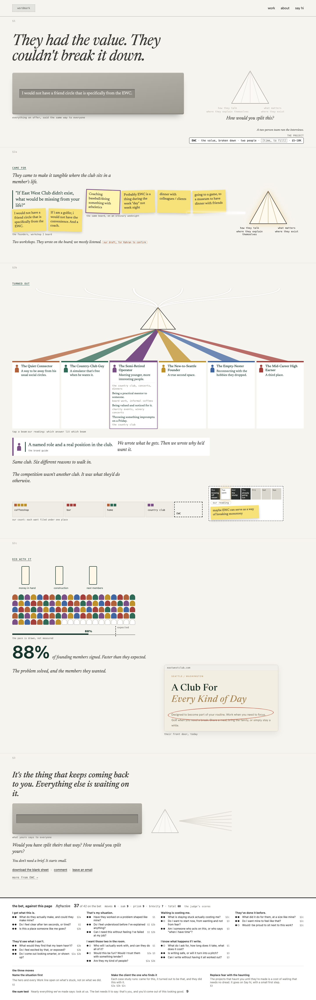
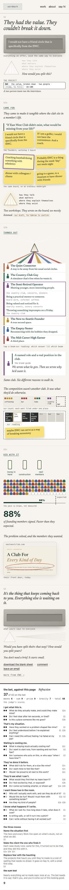
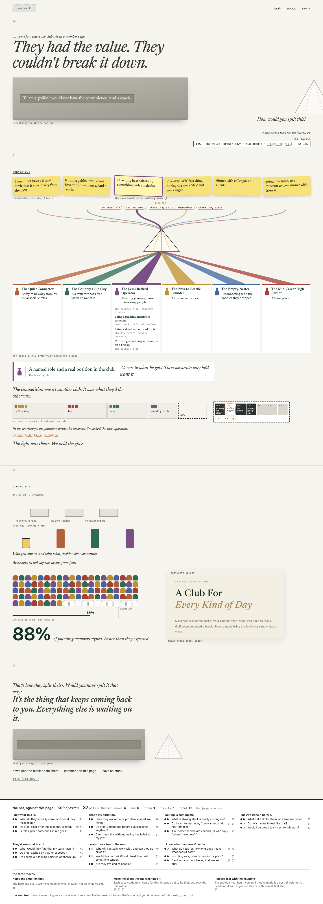
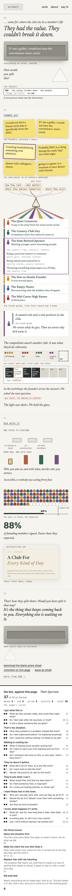
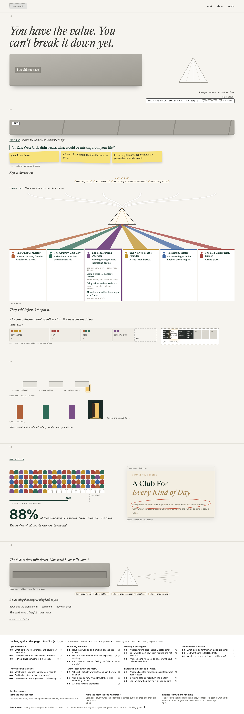
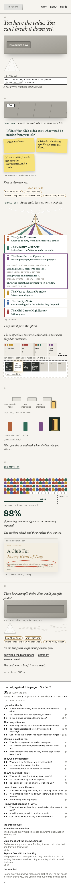
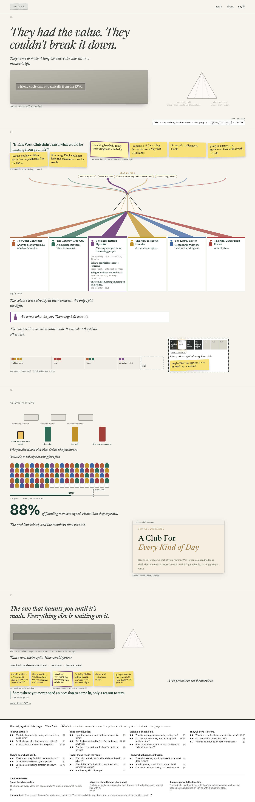
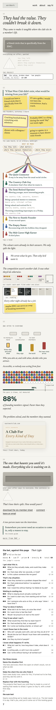

Study 86 · 6 November 2026 · for Kahran
EWC, the prism inside the bet, four ways
Study 85's Prism, taken forward inside Divya's model: the bet's reader (a founder or creative, sent by someone they trust, missing one piece), her three moves in her order (name the situation first; the client finds it: came for this, it turned out to be that, they did this with it; the haunting instead of fear) and the sum (that's you, and you'd come out of this looking good, not look at us). One EWC case study about one part of the work, the value broken down; no timeline; the Tuesday a postage stamp. Four variants in the judge's order, best first; under each page, the bet against it: the 21 questions with the judge's scores, the three moves, the sum test. On a phone each page is about 3,600px to its last section (Study 85's were 8,000 to 9,500px).
"I think the prism has something special. Let's take that idea forward but reground in making sure we are operating within the bet and questions / model Divya designed."
Kahran, 6 Nov, on Study 85.a · Refraction
68 in all · the bet 37 of 42 · moves 6 · sum 9 · prism 9 · brevity 7 · 3681px on a phone
The Prism run in Divya's three moves, in her order, and nothing more. One grey slab the reader knows as their own; it turns out to be made of the founders' own stickies, and goes through the prism into six beams in came for, turned out, did with it; three flat tiles that the seats stand up; the prism back, unlit, beside the reader's own slab, one field to type in.
Judge: 37 of 42 + 6 moves + 9 sum + 9 prism + 7 brevity. The cleanest run of Divya's three moves in her order; the light is the club's. Fixes asked: put 'Accessible, so nobody was acting from fear.' back by the tiles (b3.e 1); the workshop line is our draft until Kahran confirms it (b6.e 1); front.png with a circle is our mark, not their pride (b4.i 1); the time box (b7.f 1, the one ship blocker); §2b holds too much, cut 'Same club...' or the monotony sticky; the ask-back and the haunting can become one. The judge also read the Move 1 sticky as two stickies joined: on the board it is one element (T-lrecafo), so it stays.


b · Their Spectrum
66 in all · the bet 37 of 42 · moves 6 · sum 8 · prism 9 · brevity 6 · 3663px on a phone
EWC came asking for one thing; the real problem was the slab, everything pooled and said the same way to everyone. The founders split it themselves, and Joyus was the glass they held it up to: the prism is drawn as an instrument at the edge of the frame, labelled 'our part'. Three short bands and a closing ask.
Judge: 37 + 6 moves + 8 sum + 9 prism + 6 brevity. 'Our part' on the prism and 'The light was theirs. We held the glass.' is the sharpest statement of the sum. Fixes asked: the kicker 'came for' is read first, so the page opens on their ask before the stuck state; 'The problem solved, and the members they wanted.' is missing (b4.e 1); tiles 'already fallen' read close to dread; §1 has about eleven labelled pieces (drop the source label and the tap hint; the room line and 'We held the glass' say the same thing); keep 'Accessible', drop 'Who you aim at'; the room line is ours and unconfirmed; time (b7.f 1); a picture only (b4.i 1).


c · Hold It Up
64 in all · the bet 35 of 42 · moves 6 · sum 9 · prism 8 · brevity 6 · 3592px on a phone
The page opens on a grey slab with no name on it, and a stranger's half sentence through the slot, so the reader takes it for their own: you have the value, and you can't break it down yet. Then a plate slides on: this one was a club's. Three labelled beats, still grey tiles, 88 of 100 seats, and the unnamed slab back beside an unlit prism with a field for the reader's words.
Judge: 35 + 6 moves + 9 sum + 8 prism + 6 brevity. The strongest Move 1 and sum: an unnamed slab the reader takes as their own, then a plate saying it was a club's; it opens and closes on the reader. Fixes asked: 'I would not have' with blank facets and no label makes the first ten seconds cryptic (b1.e 1); no Operator pair, so the two voices never meet in words (b1.i 1); the haunting sits small and there is no wanting-not-fear line (b3.e 1); the touch-to-stand row competes with tap-a-beam; §1 holds too much (drop the counts, one of the two margin lines); 'Kept as they wrote it' (b6.e 1), time (b7.f 1), a circle on a picture (b4.i 1).


d · Their Light
64 in all · the bet 37 of 42 · moves 6 · sum 7 · prism 8 · brevity 6 · 3635px on a phone
The Prism, but the light belongs to the club: each beam rises out of one of the founders' own stickies, so the colours were already in what they told us and the prism (our four facets) only separated them. Four short bands, one per move or proof.
Judge: 37 + 6 moves + 7 sum + 8 prism + 6 brevity. Rooting each beam in a sticky is right; the strongest Move 3 wording and both b3.e lines. Fixes asked: the Operator pair has lost its upright half (b1.i 1); the close slips back to clutter (a shrunk sticky row, the two-person line, a brand-voice quote at the door, a 'six-member sheet' that is ours, not the reader's tool); the haunting line is the Move 3 gloss, not the bet's belief line, so it is not quoted as the bet's here; drop the numeric counts; show the unlit prism's afterglow in §4. Time (b7.f 1), b4.i 1, b6.e 1.


Open for Kahran
The tag's time for this part of the work (the one ship blocker on every variant). A client pride line: every quote slot stays hidden until one is cleared. The workshop lines in a and b ("Two workshops. They wrote on the board; we mostly listened." and "In the workshops the founders wrote the answers. We asked the next question.") are our drafts, marked on the page; they need your word that they are true. d's haunting line is the Move 3 gloss, not the bet's belief line, so it is set as ours and not quoted as the bet's. Which answer lit which beam is our reading, marked.